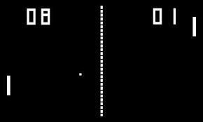
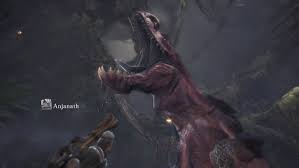

It's a bit confusing, with dates and years, but one of the first video games, if not THE first, was Pong. Pong is a very simple game released by Atari Inc. It was on the first video game console, Magnavox Odyssey.
And now, things don't exactly look like that game from the 70's anymore.  Now, things look a lot more like this.  Things certainly started looking much more refined in the recent years.